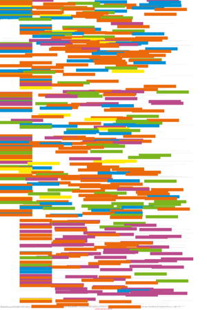
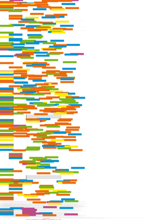
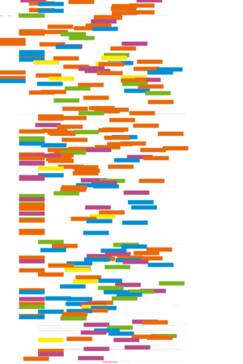
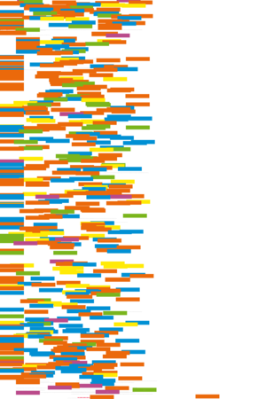
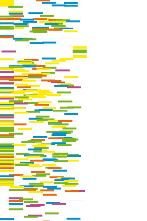
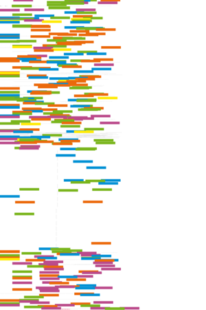

| About IR |
| Editors |
| Author instructions |
| Copyright |
| Author index |
| Subject index |
| Search |
| Reviews |
| Register |
| Home |

Volume 7 No 4 July 2002
ISSN 1368-1613
If you find Information Research useful, please sign in and we'll notify you of future issues. |
Contents
 Editorial
Editorial
Special issue on the Semantic Web
Issue Editor's Introduction
The Semantic Web: opportunities and challenges for next-generation Web applications, by Shiyong Lu, Ming Dong and Farshad Fotouhi, Department of Computer Science, Wayne State University, Detroit, Michigan, USA
Forms of labour in information systems, by Julian Warner, School of Management and Economics, The Queen's University of Belfast, UK
The Semantic Web, universalist ambition and some lessons from librarianship, by Terrence A. Brooks, Information School, University of Washington, Seattle, Washington, USA
The necessity for information space mapping for information retrieval on the semantic web, by Gregory B. Newby, University of North Carolina at Chapel Hill, Chapel Hill, North Carolina, USA
Other refereed papers
Critical Success Factors and information needs in Estonian industry, by Aiki Tibar, Tallinn Technical University Library, Tallinn, Estonia
An improved method of studying user-system interaction by combining transaction log analysis and protocol analysis, by Jillian R. Griffiths, R.J. Hartley and Jonathan P. Willson, Department of Information and Communications,
Manchester Metropolitan University, Manchester, UK
Abstracts in Spanish/Resúmenes en Español 
Reviews
Beck, A., Bennet, P., & Wall, P. Communication studies: the essential introduction. London/New York: Routledge, 2002.
Compaine, B. M. & Greenstein S. eds. Communication policy in transition: the Internet and beyond. Cambridge, MA: The MIT Press, 2001.
diSessa, Andrea A. Changing minds: computer, learning, and literacy. Cambridge (Mass.): The MIT Press, 2001.
Lee, Stuart D. Building an electronic resource collection: a practical guide. London: LA Publishing, 2002.
Meadows, Jack. Understanding information. München: KG Saur, 2001.
Weinberger, David. Small pieces loosely joined (a unified theory of the Web). Cambridge, MA: Perseus Publications, 2002.
What's in the free e-journals?
Other links
Check the other resources available at InformationR.net - free resources for information researchers.
Information Research: an international electronic journal, is published four times a year by Professor Tom Wilson of the Department of Information Studies, University of Sheffield in association with | |
Nanyang Technological University, Singapore |
University of Tampere, Finland |
University of Murcia, Spain | |
Pennsylvania State University, USA |
University of Vilnius, Lithuania |
Design and Editorial content © T.D. Wilson 1996-2002